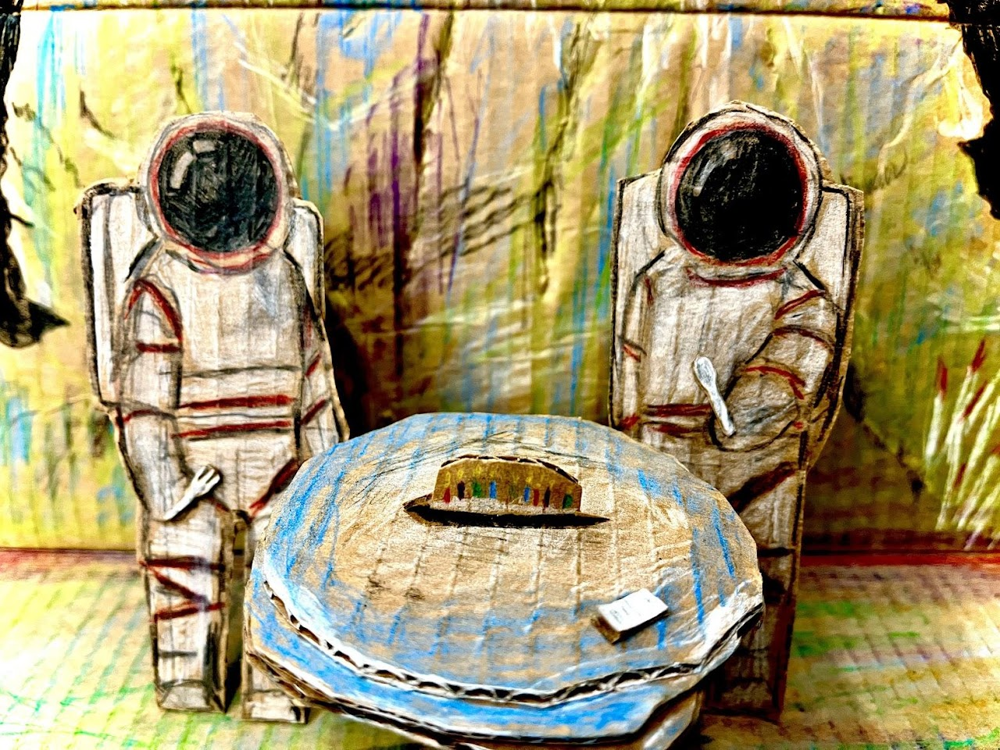
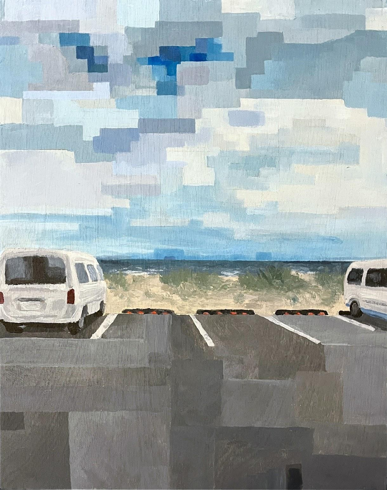
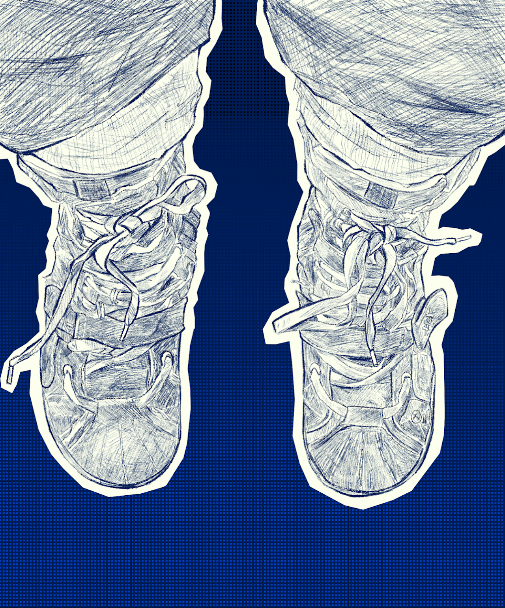
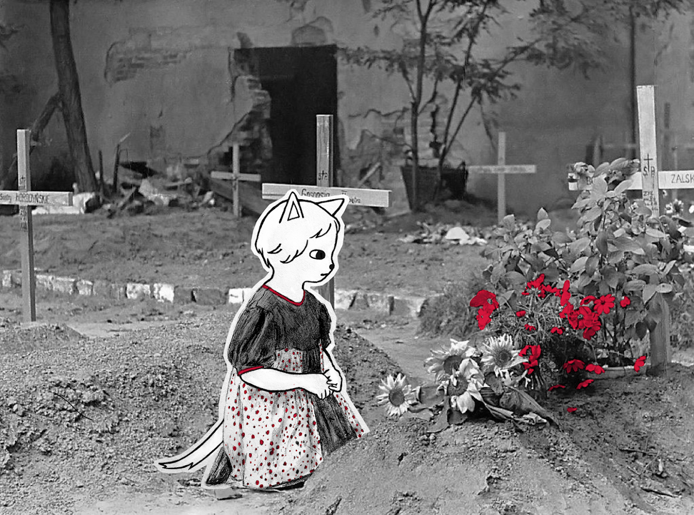
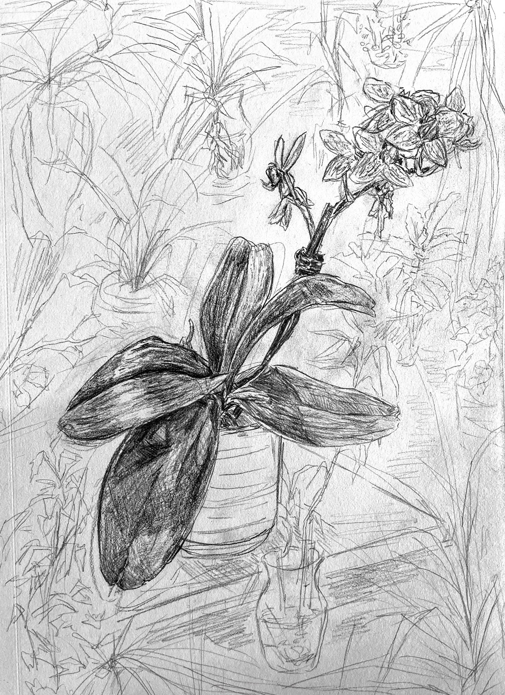
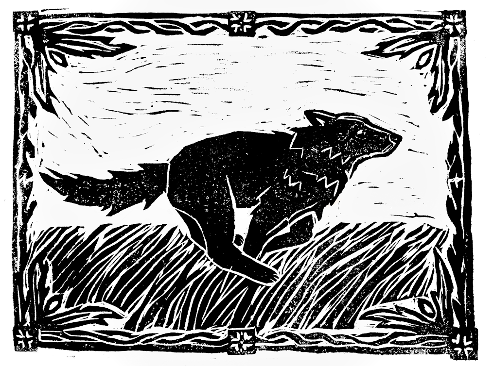

ART GALLERY
Welcome to my art archives! I store pretty much all of the art I've made over the years here. Hover over the galleries to pause the scroll.
Digital Art
All art made digitally.


Traditional Art
Physical 2D and 3D works.


Skill Lab
Technical studies and art exercises.





